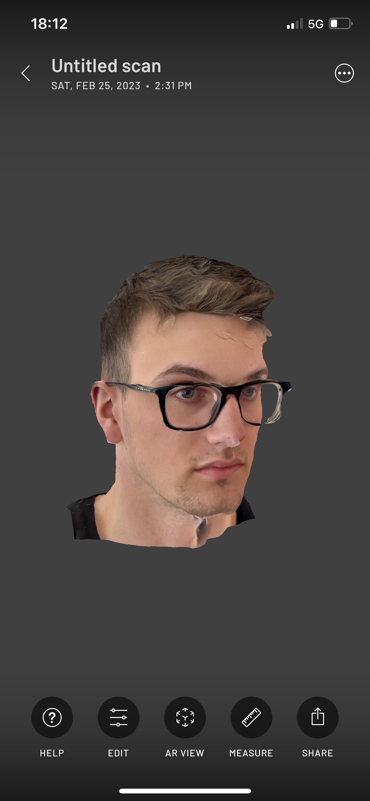
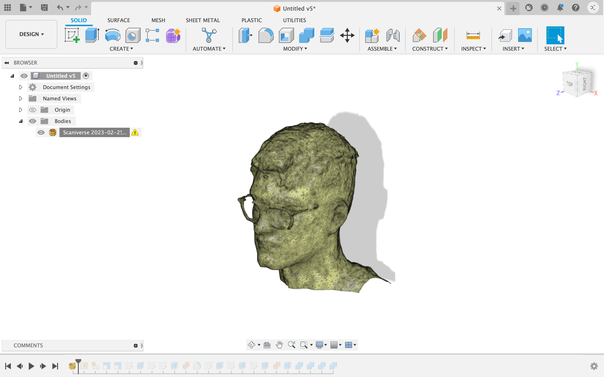
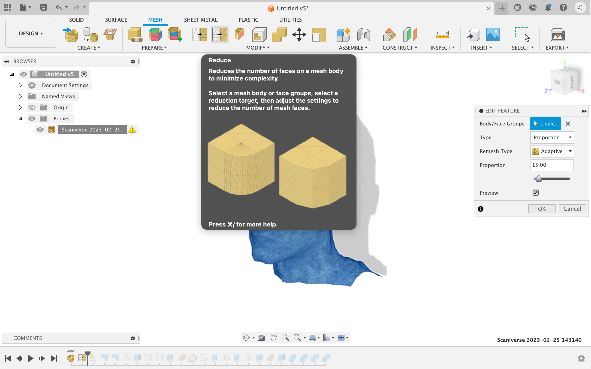

Project 4 - The Final Project
Sorry, this one is also in Icelandic...
Minn hluti af Lokaverkefninu "Íslandsborð"

Efnisyfirlit
Hér er hægt að sjá hvað ég gerði í réttri röð. Hægt er að fylgja köflunum eftir í röð eða fara aðeins í þann kafla sem þarf að sjá.
- Minnka mesh
- Byrjun á toolpath
- Meðhöndlun á borðplötum
- Fræsun
- Fætur undir borðið
- Einblöðungur
Minnka mesh
Sækja forritið

Skanna

Fá niðurstöðu

Þegar 3D skönnunin er tilbúin þá þarf að færa skönnunina úr forritinu yfir í Fusion 360. Hægt er að gera "Export" í gegnum Scaniverse og vista sem STL file sem hægt er að opna í fusion (einnig hægt að nota OBJ).
Byrjun á toolpath
Opna í Fusion 360

Nota "Reduce Mesh"

"Convert Mesh"

Meðhöndlun á borðplötum
Fræsun
Fætur undir borðið
Einblöðungur